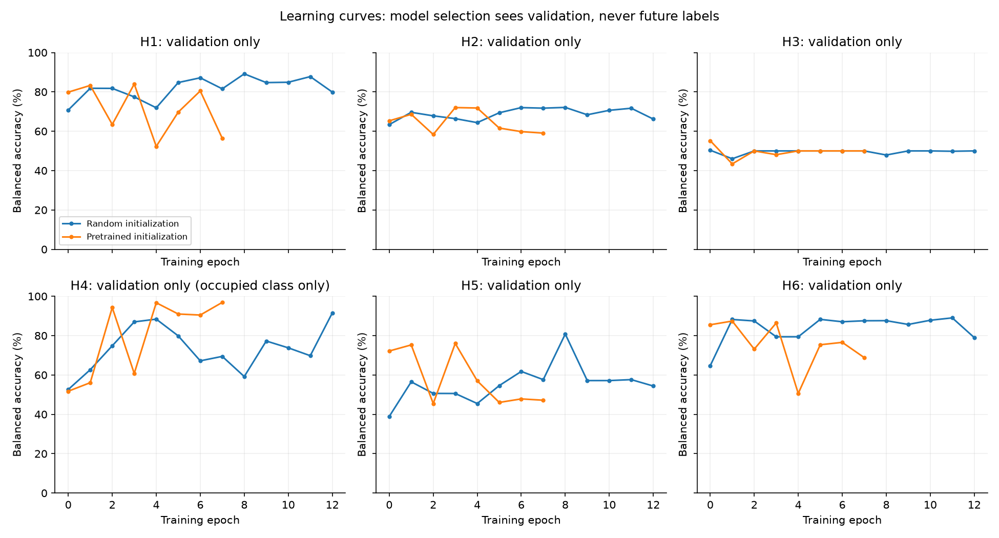
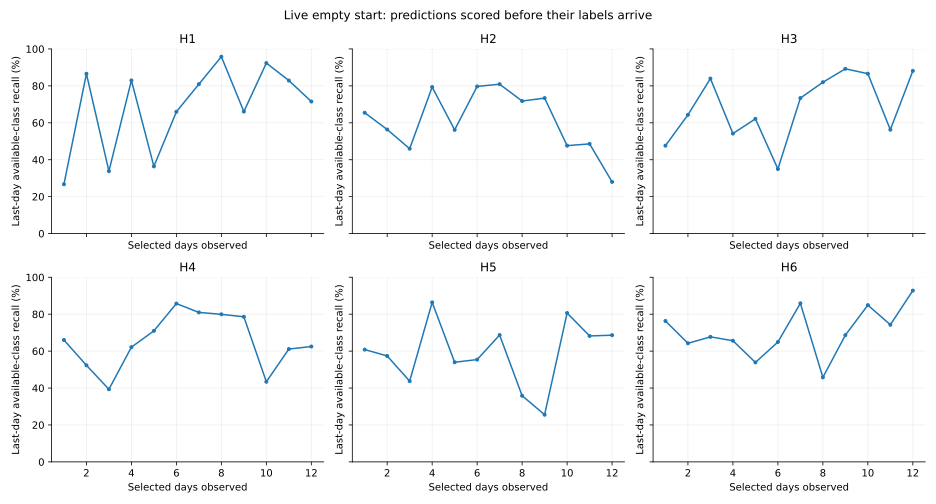
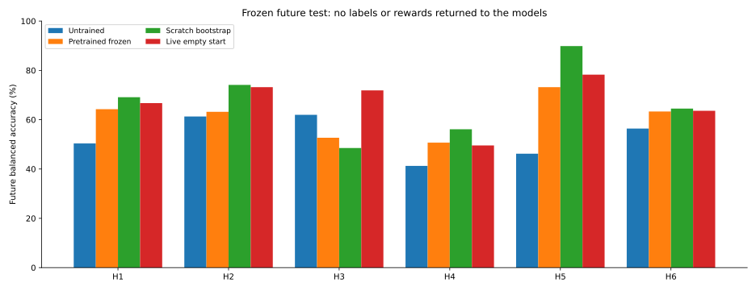
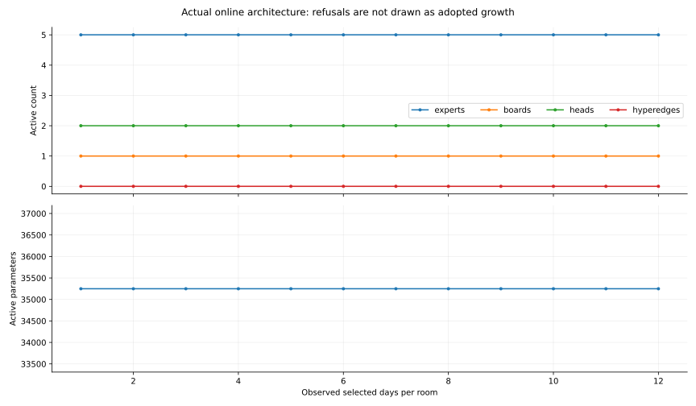
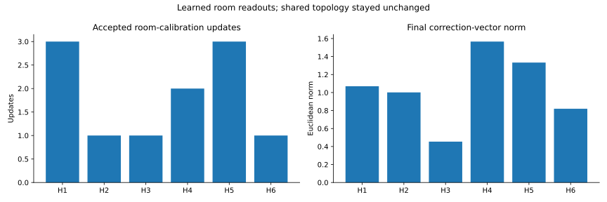
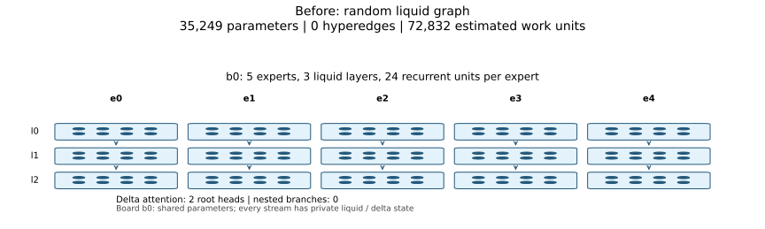
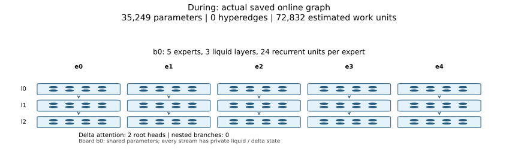

Six feeds per room share one recorded timeline. They test execution and state isolation, not independent data. Cold bootstrap and live online learning are separate protocols. Scores below use untouched later data.
| Room | Untrained | Pretrained frozen | Scratch bootstrap | Live empty start |
|---|---|---|---|---|
| H1 | 50.36% | 64.26% | 69.11% | 66.72% |
| H2 | 61.30% | 63.20% | 74.11% | 73.19% |
| H3 | 61.98% | 52.67% | 48.51% | 71.88% |
| H4 | 41.26% | 50.68% | 56.12% | 49.57% |
| H5 | 46.20% | 73.19% | 89.86% | 78.26% |
| H6 | 56.40% | 63.32% | 64.51% | 63.61% |



A flat architecture means no topology change was accepted. Candidate attempts are recorded in receipts; they are not presented as growth.




The matching JSON layouts preserve exact vertices, memberships and tensor aliases. See the repository documents and acceptance.json for support, protocol and pass/fail flags.